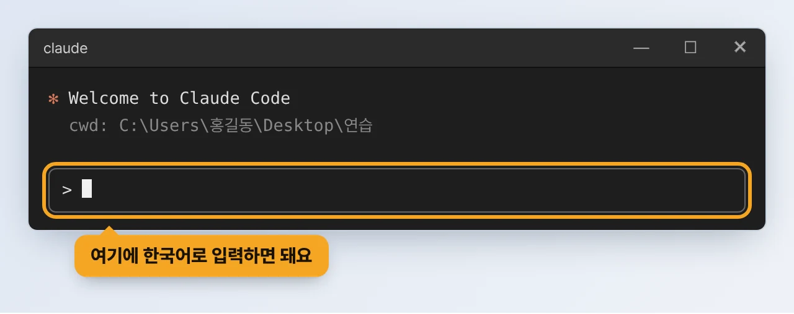
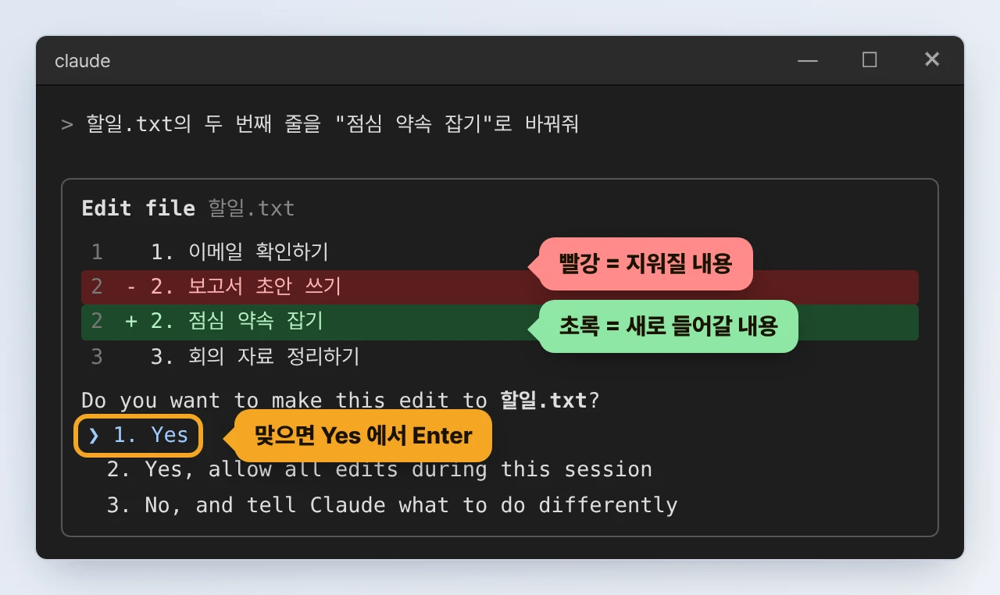
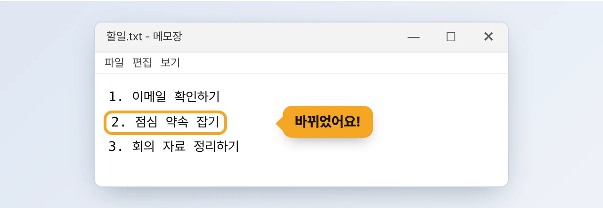
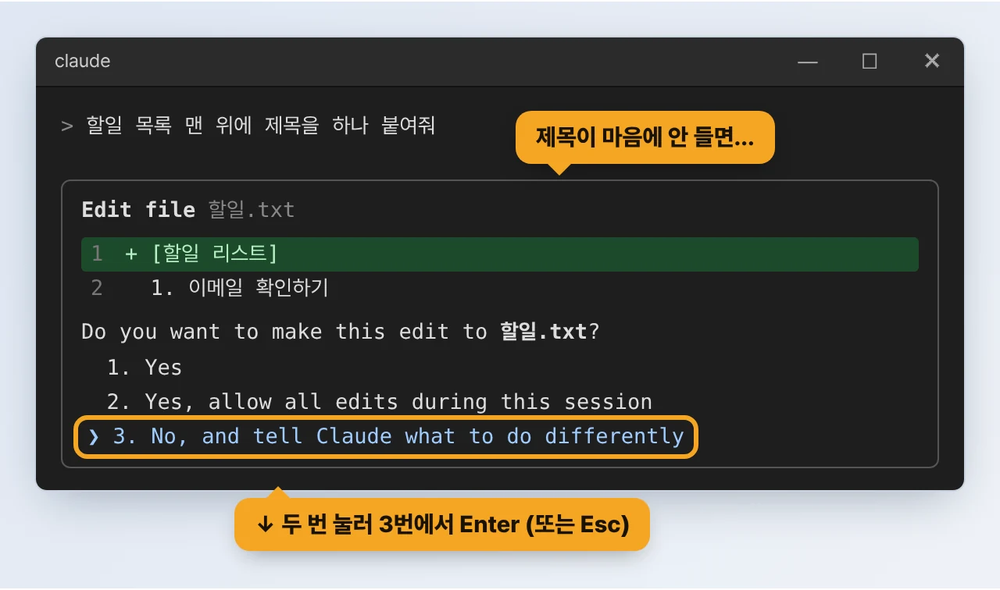
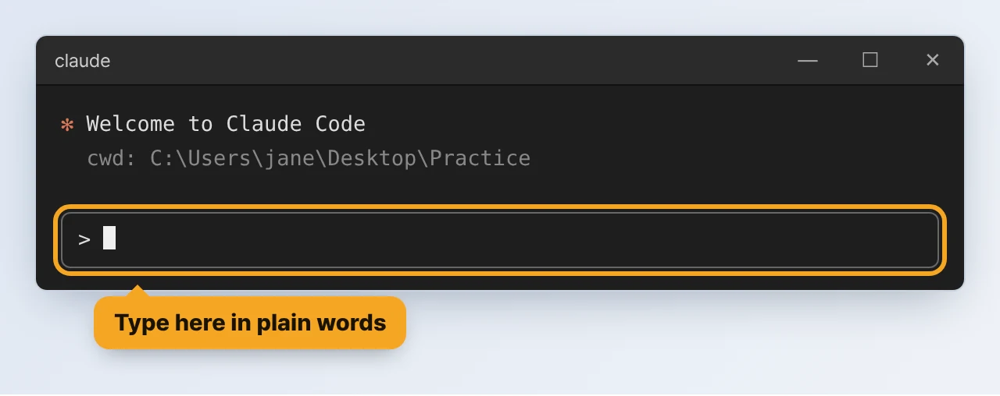
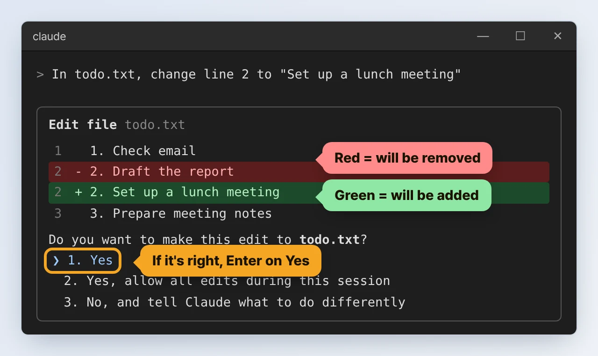
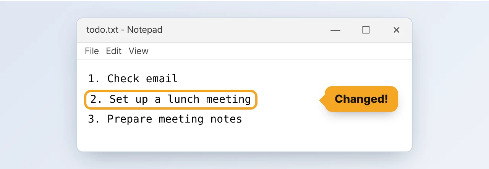
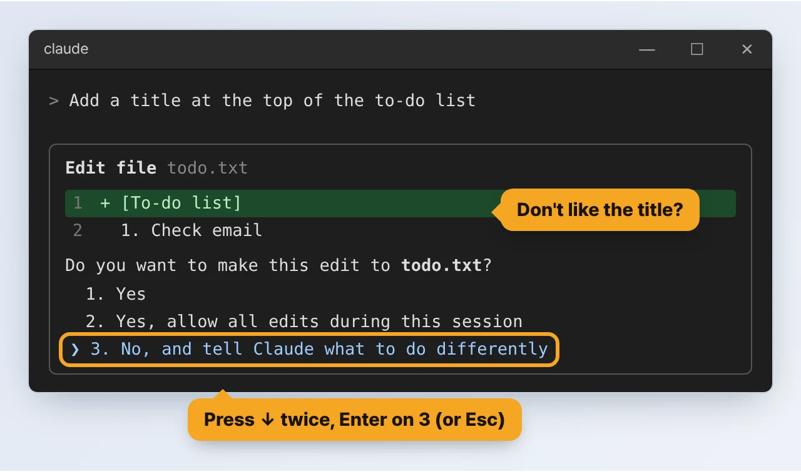

👆 이 내용은 버튼 따라 하는 실습으로도 있어요. 처음이라면 실습으로 직접 해 보고, 이 글은 복습할 때 보세요. 실습 시작하기 →
※ 글 속 그림은 따라 하기 쉽도록 그린 예시입니다. 실제 화면과 모양이 조금 다를 수 있어요.
오늘 새로 배우는 것
- Claude가 파일을 고치기 전에 보여 주는 "바뀌는 내용" 화면을 읽는 법
- 마음에 안 들 때 거절하고 다시 부탁하는 법
1. Claude Code 다시 켜기
1편의 3번과 똑같습니다.
- 바탕화면의 연습 폴더를 두 번 눌러 엽니다.
- 폴더 창 맨 위 주소 칸을 한 번 누르고, powershell 이라고 쓰고 Enter.
(Mac은 터미널을 열고 cd 와 한 칸 띄운 뒤, 연습 폴더를 끌어다 놓고 Enter) - 열린 창에 claude 를 입력하고 Enter.
로그인은 처음 한 번만 하면 됩니다. 이번에는 질문 없이 바로 아래처럼 입력 칸이 나옵니다.

2. 먼저 파일을 읽어 달라고 하기
입력 칸에 아래 문장을 쓰고 Enter 를 누르세요.
할일.txt에 뭐라고 적혀 있는지 보여줘Claude가 파일 내용을 그대로 보여 줍니다.
이번에는 허락을 묻지 않았죠? 파일을 읽기만 할 때는 아무것도 바뀌지 않기 때문에 바로 보여 줍니다. 파일을 만들거나 고칠 때만 허락을 묻습니다.
3. 고쳐 달라고 하기
할일.txt의 두 번째 줄을 "점심 약속 잡기"로 바꿔줘1편처럼 허락을 묻는데, 이번에는 무엇이 어떻게 바뀌는지를 함께 보여 줍니다.

4. "바뀌는 내용" 화면 읽는 법
처음 보면 낯설지만, 색깔만 보면 됩니다.
| 보이는 것 | 뜻 |
|---|---|
| - 빨간 줄 | 지워질 내용입니다. 예) - 2. 보고서 초안 쓰기 |
| + 초록 줄 | 새로 들어갈 내용입니다. 예) + 2. 점심 약속 잡기 |
| 색 없는 줄 | 그대로 남는 내용입니다. |
맨 아래 영어 질문 Do you want to make this edit…? 은 "이렇게 고쳐도 될까요?"라는 뜻입니다. 답은 세 가지입니다.
| 고르는 것 | 뜻 |
|---|---|
| 1. Yes | 네, 이대로 고쳐 주세요. |
| 2. Yes, allow all edits… | 이번 대화 동안은 묻지 말고 다 고쳐 주세요. → 지금은 고르지 마세요. 익숙해진 뒤 다른 글에서 설명합니다. |
| 3. No… | 아니요, 다르게 해 주세요. (아래 6번에서 연습합니다) |
빨간 줄과 초록 줄이 내가 부탁한 대로라면, 1. Yes 가 선택된 상태에서 Enter 를 누릅니다.
5. 결과 눈으로 확인하기
- 연습 폴더에서 할일.txt 를 두 번 누릅니다. 메모장(Mac은 텍스트 편집기)이 열립니다.
- 두 번째 줄이 점심 약속 잡기 로 바뀌었는지 확인합니다.
- 확인했으면 메모장은 닫아 주세요. (열어 둔 채로 Claude에게 또 고치게 하면 헷갈릴 수 있어요.)

6. 마음에 안 들 때 — 거절하고 다시 부탁하기
이번에는 일부러 "아니요"를 눌러 봅니다. 아니요를 눌러도 파일은 전혀 바뀌지 않으니 안심하세요.
할일 목록 맨 위에 제목을 하나 붙여줘Claude가 제목을 정해서 바뀌는 내용을 보여 줍니다. 그 제목이 마음에 안 든다고 해 봅시다.
- 키보드 ↓ 를 두 번 눌러 3. No… 로 내려갑니다. (또는 Esc 키를 한 번)
- Enter 를 누르면 다시 입력 칸이 나옵니다.
- 원하는 것을 말해 줍니다.

제목은 "오늘의 할 일"로 해줘새로 보여 주는 내용에 + 오늘의 할 일 이 초록 줄로 보이면 1. Yes 를 고릅니다.
7. 끝내기
1편과 같습니다. /exit 를 입력하고 Enter, 또는 그냥 창을 닫으면 됩니다.
잘 안 될 때
| 이런 경우 | 이렇게 하세요 |
|---|---|
| "할일.txt가 없다"고 함 | 연습 폴더에서 켰는지 확인하세요. 1편 3번을 다시 보세요. |
| 실수로 Yes를 눌렀음 | Claude에게 "방금 바꾼 거 원래대로 돌려줘"라고 말하면 됩니다. |
| 영어 질문이 무슨 뜻인지 모르겠음 | 모르겠으면 3. No 를 고르세요. 아무것도 바뀌지 않습니다. |
오늘 배운 것
- 파일을 읽을 때는 허락을 묻지 않고, 만들거나 고칠 때만 묻는다.
- 고치기 전 화면에서 빨간 줄은 지워질 내용, 초록 줄은 새로 들어갈 내용이다.
- 마음에 안 들면 No 를 고르고 다시 말하면 된다. 파일은 그대로다.
다음 글에서는 대화를 새로 시작하는 법과 다음 날 이어서 하는 법을 배웁니다.
※ The pictures in this guide are illustrations to make it easy to follow. Your screen may look a little different.
What you'll learn today
- How to read the "what will change" screen Claude shows before editing a file
- How to say no and ask again when you don't like it
1. Start Claude Code again
Same as step 3 in Guide 1.
- Double-click the Practice folder on your desktop to open it.
- Click the address bar at the top of the folder window once, type powershell and press Enter.
(On a Mac, open Terminal, type cd and a space, drag in the practice folder, and press Enter) - Type claude in the window and press Enter.
You only sign in the first time. This time the box to type in appears right away, with no questions.

2. First, ask it to read the file
Type the sentence below in the box and press Enter.
Show me what todo.txt saysClaude shows you what's in the file.
Notice it didn't ask permission this time? When it only reads a file, nothing changes, so it just shows you. It only asks permission when it creates or edits a file.
3. Ask it to make an edit
In todo.txt, change line 2 to "Set up a lunch meeting"Like in Guide 1, it asks permission, but this time it also shows exactly what will change.

4. How to read the "what will change" screen
It looks strange at first, but just look at the colors.
| What you see | Meaning |
|---|---|
| - Red line | Text that will be removed. e.g. - 2. Draft the report |
| + Green line | Text that will be added. e.g. + 2. Set up a lunch meeting |
| Uncolored line | Text that stays the same. |
The question at the bottom, Do you want to make this edit…?, means "May I make this change?" There are three answers.
| Choice | Meaning |
|---|---|
| 1. Yes | Yes, make this change. |
| 2. Yes, allow all edits… | Don't ask again in this conversation; just make every change. → Don't choose this for now. We'll explain it in a later guide, once you're comfortable. |
| 3. No… | No, do it differently. (You'll practice this in step 6) |
If the red and green lines are what you asked for, press Enter with 1. Yes selected.
5. See the result with your own eyes
- In the practice folder, double-click todo.txt. Notepad (TextEdit on a Mac) opens.
- Check that line 2 now says Set up a lunch meeting.
- Once you've checked, close Notepad. (Leaving it open while Claude edits again can be confusing.)

6. Don't like it? Say no and ask again
This time, let's press "No" on purpose. Don't worry: pressing No doesn't change the file at all.
Add a title at the top of the to-do listClaude picks a title and shows what will change. Let's say you don't like that title.
- Press ↓ twice to move to 3. No… (or press Esc once)
- Press Enter and the typing box comes back.
- Tell it what you want.

Make the title "Today's to-dos"When the new preview shows + Today's to-dos as a green line, choose 1. Yes.
7. Finish
Same as Guide 1. Type /exit and press Enter, or just close the window.
If something goes wrong
| If this happens | Do this |
|---|---|
| It says todo.txt doesn't exist | Check that you started it in the practice folder. See step 3 of Guide 1 again. |
| You pressed Yes by mistake | Tell Claude, "Undo the change you just made." |
| You don't understand the question | If unsure, choose 3. No. Nothing will change. |
What you learned today
- It doesn't ask when it reads a file; it only asks when it creates or edits one.
- On the before-edit screen, red lines will be removed and green lines will be added.
- If you don't like it, choose No and say it again. The file stays as it was.
In the next guide you'll learn how to start a new conversation and how to pick up where you left off the next day.